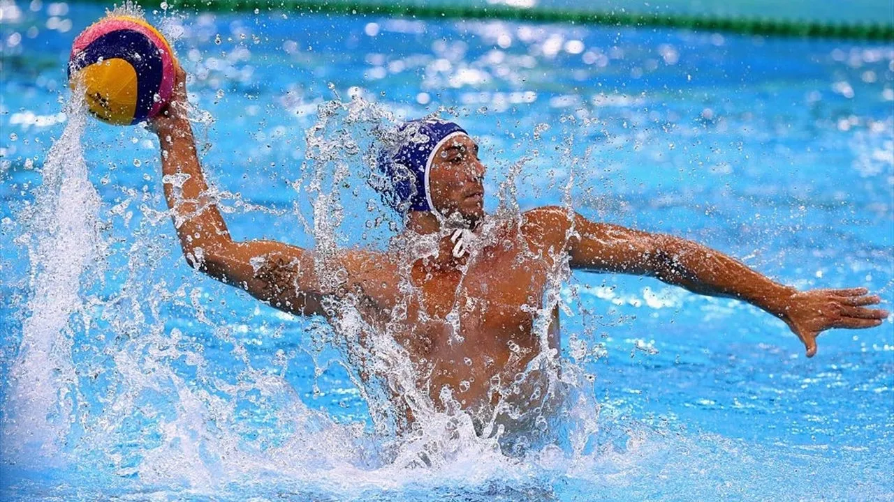

Water polo is a high-intensity team sport played in a pool, combining elements of swimming, soccer,
and basketball. Each team consists of seven players, including a goalkeeper, and the primary objective is
to score goals by throwing the ball into the opponent's net. Players must remain buoyant without touching
the pool floor, often using a specialized leg movement called the eggbeater kick. Known for being one of the
most physically demanding Olympic sports, it requires a unique blend of cardiovascular endurance, upper-body
strength, and strategic
teamwork to navigate both the offensive and defensive phases of the game.

Successful sportsmens
Dezső Gyarmati
Dezső Gyarmati: Known as the most successful player in Olympic history, Gyarmati won medals at
five consecutive Olympic Games (1948–1964), including three golds.
Manuel Estiarte
Manuel Estiarte: Nicknamed "the water polo equivalent of Maradona," Estiarte competed
in six Olympic Games and remains the all-time leading scorer in Olympic water polo history with 127 goals.
He was voted the World’s Best Water Polo Player for seven consecutive years
Teams
VK Partizan (Serbia): Tied with Mladost with 7 European titles, Partizan is famous for its legendary academy that has
produced many of the world's best players.
HAVK Mladost (Croatia): A powerhouse from Zagreb with 7 European titles.
They dominated much of the late 20th century.
Pro Recco (Italy): Undisputedly the most successful club
in the world. They hold
a record 11 Champions League titles and over 35 Italian Championships.
Last championship results
2026 Men's European Championship: Serbia claimed their ninth title on home
soil in Belgrade on January 26, 2026, defeating Hungary with a final score of 10–7.
.jpg)

.jpg)
.jpg)